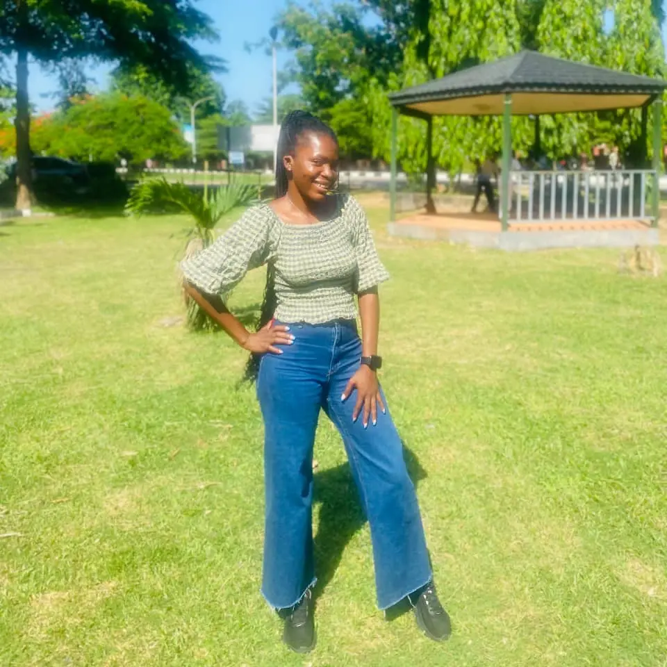

Iruka Nkechi Miracle
About Me
Hello! I'm Iruka Nkechi Miracle, a passionate and curious web development student currently enrolled in WDD 131: Dynamic Web Fundamentals. I'm diving deep into the world of HTML, CSS, and JavaScript to build responsive, accessible, and visually engaging websites. This course is helping me sharpen my skills in front-end development, and I'm excited to bring creativity and functionality together in every project I create.
My Interests
- Web development and front-end design
- User experience (UX) and digital storytelling
- Exploring new tech tools and frameworks
- Community building and collaboration
Hobbies
- Graphic design and creative layouts
- Reading books and listening to podcasts
- Volunteering and mentoring in tech communities
Goals
- Build a professional portfolio of responsive websites
- Contribute to open-source projects
- Land a junior developer role and keep learning!